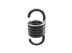
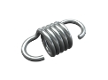
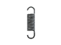
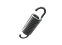
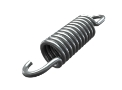

Пружины для батута
Изготовление винтовых пружин на заказ партиями от 1-й штуки за 1-3 дня.
Выполним по разнообразным параметрам, чертежам или образцу, фото, эскизу.
- 
- 
- 
- 
- 
Изготовление и производство пружин для батута
“Индустриал Спрингс” уже более 10 лет проектирует и изготавливает пружины для разнообразных видов батутов: от детских и школьных до спортивных и олимпийских. Заказать батутные пружины можно в любых объемах, с разными характеристиками и формой (цилиндрическая, конусная и другие).
Изготавливая пружины мы используем высококачественные стали (углеродистые, легированные, специальные теплостойкие и нержавеющие), а также адаптированное к работе профессиональное оборудование. “Индустриал Спрингс” проектирует и производит пружины кручения в Украине, придерживаясь нормам ГОСТа, на долго сохраняя прочность и устойчивость к интенсивным нагрузкам.
Мы занимаемся производством изделий из проволоки любых видов, от стандартных до сложнейших образцов. Пружины для батута можно купить у нас по оптовым и розничным ценам. При оформлении заявки на расчет и изготовление пружин для батута проконсультируйтесь с нашими специалистами, для точного составления технического задания к Вашему заказу, где будут учтены все необходимые параметры: диаметр и высота пружины, диаметр проволоки, а также материал и количество полных витков. Для заказа свяжитесь с мененджером нашей компании через форму заявки или по телефону.